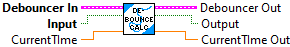
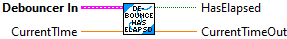
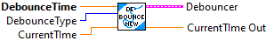

Applies the debouncer to the input stream.
Inputs:
- DebounceIn -- Debounce data cluster
- input -- The current value of the input stream.
- CurrentTime -- (Optional - Default: read system timer) The current system elapsed time.
Outputs:
- DebouceOut -- Updated data cluster
- output -- The debounced value of the input stream.
- CurrentTimeOut -- The current system time. If not read and not supplied, value will be -1.0.
A simple debounce filter for boolean streams. Requires that the boolean change value from baseline for a specified period of time before the filtered value changes.
This is a LabVIEW style single function call.
Inputs:
- DebounceType -- Which type of state change the debouncing will be performed on. (Optional: Default: Rising)
- DebounceTime -- The number of seconds the value must change from baseline for the filtered value to change.
- Input -- Boolean input value.
- CurrentTime -- Current system running time. (Optional - Default: Read system time.)
Output:
- Output -- Value of debounced input.
- Debouncer -- Initialized data cluster for debouncer.

Internal function
See if debounce time has elapsed.

A simple debounce filter for boolean streams. Requires that the boolean change value from baseline for a specified period of time before the filtered value changes.
Creates a new Debouncer.
Inputs:
- DebounceTime -- The number of seconds the value must change from baseline for the filtered value to change.
- DebounceType -- Which type of state change the debouncing will be performed on. (Optional: Default: Rising)
- CurrentTime -- Current system running time. (Optional - Default: Read system time.)
Output:
- Debouncer -- Initialized data cluster for debouncer.

This is an internal function.
Resets previous time.